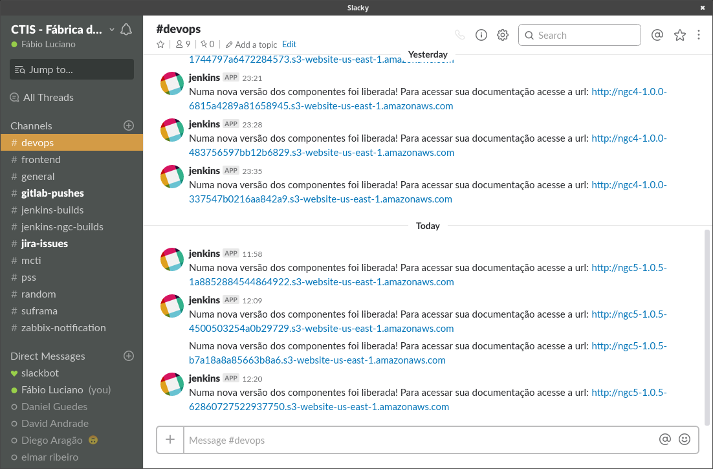

lsmod (1)Containers para pessoas ansiosas
Sobre o autor
Meu nome é Fábio Luciano, trabalho como arquiteto de soluções na empresa SONDA.
Alguns fatos
Sou gay e casado 🏳️🌈;
Sou apaixonado por tecnologia e por software livre 🐧;
Sou ansioso pra cacete 😰.
O porquê desta apresentação?
Organizar meus conhecimentos sobre o assunto em algum lugar;
Enfrentar o medo de falar publicamente; e
Disseminar o conhecimento.
Alguns links
Sobre esta Apresentação
Como vai funcionar?
Apresentação dos conceitos;
Demonstrações das funcionalidades;
Discussão sobre o assunto.
Sobre a distribuição deste documento
Todo
Este é um documento em construção
Tecnologias
DocBook
AsciiDoc
AsciiDoctor
PlantUML
Docker
Shell
Travis
Github Pages
Badges
O Que veremos
Open Source;
Sistemas Operacionais e sua arquitetura;
Conteinerização;
Conversational Development;
(Dev(Sec)?|Chat)Ops;
Arquitetura de Software;
Arquitetura de Soluções;
Open Source
Características
Descentralização;
Colaboração;
Liberdade.
Licenças
GPLv3;
Apache;
MIT.
Modelos e organizações
A Catedral e o Bazar
Catedral
Bazar
Cases de Sucesso
Linux
Metadistribuições
Slackware;
Gentoo;
Arch Linux;
Distribuições
Debian;
Red Hat;
Olhar pessoal
As comunidades relacionadas são incríveis (irc, fórum, etc.);
As documentações são incríveis (Arch Linux);
Salvo exceções, sempre há alguém disposto a ajudar.
Sistemas Operacionais
Características
Interface entre o usuário e o hardware
Gerenciamento de dispositivos (Entradas e Saídas)
Prover um ambiente para o funcionamento de programas
Interface para o gerenciamento de dados
Monitorar a saúde do hardware
Kernel do Linux
Características
Tudo é representado como arquivo;
Pseudo filesystems
dev,procesys,fd
Possui clara separação entre o espaço do usuário e o do kernel;
Os processos são separados em
namespaces;A Comunicação entre o
user spaceekernel spaceé feita por intermédio de bibliotecas ou sinais.

Onde os processos do usuário são executados;
Região fracionada e limitada da memória.

Onde os processos do kernel são executados;
Região fracionada e privilegiada da memória.
System Calls
Único meio de comunicação entre o
User SpaceeKernel Space;Gerenciamento de Processos, memória, arquivos, dispositivos, rede e etc.
Sinais
SIGHUP - Reinicializa o processo;
GITTERM - Termina de forma graciosa Ctrl+c;
SIGKILL - Termina sem fazer nenhum tipo de checagem Ctrl+d.
Memory Management
Gerenciamento da memória;
Decide como os dados serão persistidos e recuperados;
Memória virtual;
Paginação;
Controle de Acesso.
Scheduler
Define em tempo de execução a alocação de recursos para um processo;
Priorização dinâmica.
Drivers
Também chamado de módulos;
Interface de comunicação entre o
Kernele os devices.
| 1 | Lista os módulos(drivers) carregados no Kernel. |

Failed to generate image: PlantUML image generation failed: /documents/src/resources/plantuml/resources/plantuml/plantuml.cfg (No such file or directory)
@startuml
skinparam dpi 300
title Comunicação da aplicação com o kernel
box "User Space"
participant Aplicação
participant GLIBC
participant vDSO
end box
box "Kernel Space"
participant SysCall
participant Kernel
participant Hardware
end box
Aplicação -> GLIBC
alt vDSO
create vDSO
GLIBC -> vDSO
vDSO --> GLIBC
else SysCall
GLIBC -> SysCall
end
SysCall -> Kernel
Kernel -> Hardware
Hardware --> Kernel
Kernel --> SysCall
SysCall --> GLIBC
GLIBC --> Aplicação
@endumlExemplo
printf.c
#include <stdio.h> (1)
#include <unistd.h> (1)
void main () {
printf(":)\n"); (2)
usleep(520000*1000);
}| 1 | Importa a biblioteca de manipulação de entrada e saída |
| 2 | Imprime na saída padrão |
gcc printf.c -o printf (1)| 1 | Compila o programa e define o arquivo de saída |
chmod +x ./printf (1)
strace ./printf (2)| 1 | Concede permissão de execução ao programa |
| 2 | Imprime todas as SysCalls chamadas pelo programa |
Chroot (Jail)
Muda o diretório raiz de um processo;
Enclausuramento de recursos;
ldd ./printf (1)
mkdir -p chroot/{lib,lib64,} (2)
cp -v /lib/x86_64-linux-gnu/libc.so.6 ./chroot/lib (3)
cp -v /lib64/ld-linux-x86-64.so.2 ./chroot/lib64 (3)
cp ./printf ./chroot/bin (3)
sudo chroot ./chroot/ /bin/printf (4)| 1 | Imprime as bibliotecas que o binário utiliza |
| 2 | Cria a estrutura de diretórios necessário (FHS) |
| 3 | Copia as bibliotecas e binário para e estrutura criada |
| 4 | Exacuta o programa enclausurado |
Namespaces
Mount (
mnt)Process (
pid)Network (
net)Interprocess Communication (
ipc)UNIX Timesharing System (
uts)User ID (
user)CGroup
Padrão namespace global;
Os namespaces podem ser visualizados em
/proc/<processid>/ns/*
unshare
setns
clone
unshare --user /bin/bash (1)
UNSHARED_PID=`echo $$` (2)
cd /proc/$UNSHARED_PID/ns (3)
ls -l (4)| 1 | Destaca a execução do binário em um namespace user diferente |
| 2 | Imprime o pid do processo criado e o associa a uma variável |
| 3 | Muda o workdir para o diretório com a lista de namespaces do processo |
| 4 | Lista os namespaces |
hostname (1)
unshare --uts /bin/bash (2)
hostname teste (3)
hostname (4)
Ctrl + d (5)
hostname (6)| 1 | Recupera o hostname atual |
| 2 | Destaca a execução do binário em um namespace user diferente |
| 3 | Altera o hostname da máquina |
| 4 | Recupera o novo hostname |
| 5 | Envia o SIGNAL SIGKILL |
| 6 | Imprime o hostname no processo principal |
UnionFS
Diretórios e arquivos em diferentes branches;
Top-Down search nas layers;
Todas as layers inferiores são
read-only;COW(
copy-on-write).
Containerização
Empacotamento de código e aplicações;
Empacotamento de dependências e versões;
Empacotamento de configurações.
Reusabilidade e Reproducibilidade.

Virtual Machines
Hardware
Sistema Operacional(Host)
Hypervisor - Habilita a virtualização/gerenciamento dos recursos
Sistema Operacional(Hospedeiro)
Binários e bibliotecas
Aplicações
Containers
Hardware
Sistema Operacional(Host)
Daemon(Daemon based)
Binários e bicliotecas
Aplicações
Vendors
| Daemon | Daemonless | Systemd |
|---|---|---|
Podman | ||
Docker | Buildah | Rkt |
Docker

Mais popular software de containers;
Elementos da stack:
Daemon
API
Client


Ecosistema
Docker Hub(Registrador)
Elementos
Dockerfile
Container
Volumes
Network
Dockerfile
Segue a especificação
image-specdo projetoopencontainers;Descreve procedimentos necessários para se criar um ambiente;
Possui uma DSL(Domain-Specific Language)
FROM alpine (1)
RUN apk update (2)
RUN apk add curl (3)| 1 | Informa a imagem base(conjunto de layers) que será utilizada |
| 2 | Atualiza a lista de pacotes |
| 3 | Instala o pacote curl |
Uma imagem é um conjunto de layers sobrepostas;
Cada instrução criará uma nova
layerna imagem final;Cada layer aumenta o tamanho da imagem.

Container
Segue a especificação
runcdo projetoopencontainers;É uma imagem em execução com a adição de uma branch writtable no topo;
Pode possuir volumes e networks;
Controle de recursos com
CGROUPSeCAPABILITIES.
Volumes
Onde os dados serão persistidos;
Possuem três tipos:
Host
Anônimo
Nomeado
Pode ser estendido com a utilização de plugins(nfs)
Network
Onde os dados do container serão trafegados
Pode ser estendido com a utilização de plugins(cluster)
Segue a especificação
cnido projetocontainernetworking;
Benefícios
Isolamento - Uma imagem com binários e dependências.
Paridade e Portabilidade - Prod/Dev
Entrega rápida - Automação de build e deploy
Conversational Development (ConvDev)
Desenvolver software é uma conversa;
O que precisa ser implementado;
O que precisa ser modificado;
Como será implementado;
Onde será implantado;
Como será controlado.
É a aplicação do agile com um objetivo simples: Finalizar uma conversa;
A conversa deve ter como objetivo a criação de um produto;
Passa por todas as áreas da linha de negócio;
Alinha-se a organização para que os processos sejam executados.
Princípios
Ciclos de conversas pequenos;
A conversa deve passar por todos os estágios do CDS;
Abra a conversa, mas não espere consenso;
Resultados orientados por conversação.
IaC e (Dev(Sec)?|Chat)Ops
Infraestrutura como código (IaC)
Trata a infraestrutura como código;
Está intimamente ligado às práticas do
DevOps;Permite a adoção de práticas do desenvolvimento;
Controle de versão
Revisão por pares
Segmentação de ambientes
Testes
Ferramentas disponíveis
Terraform
Cloud Formation
Ansible
Chef
Puppet
Terraform
A infraestrutura é definida utilizando HCL;
Utiliza grafos para controlar as dependências dos recursos;
Possui implementação para diversos providers(AWS, Azure, Google, etc.);
Todos os recursos necessários podem ser criados programáticamente.

Exemplo
resource "aws_subnet" "subnet-public-1" {
vpc_id = "${aws_vpc.vpc-devops.id}"
cidr_block = "${cidrsubnet(aws_vpc.vpc-devops.cidr_block, 8, 1)}"
ipv6_cidr_block = "${cidrsubnet(aws_vpc.vpc-devops.ipv6_cidr_block, 8, 1)}"
availability_zone = "${data.aws_availability_zones.available.names[0]}"
map_public_ip_on_launch = true
tags {
Name = "${cidrsubnet(aws_vpc.vpc-devops.cidr_block, 8, 2)} - subnet-public-1"
}
}Ansible
Engine de automação;
Idempotência
Utiliza
yamlpara descrever os procedimentos;Módulos:
Infraestrutura na núvel;
Gerenciamento de Configuração;
Construção e implantação de aplicações..
As máquinas alvo da execução são organizadas em um
inventoryUtiliza o protocolo
SSHpara se comunicar as máquinas doinventory;As execuções são agrupadas em
playbooks;Cada execução é chamada de
play.
Exemplo
- name: Docker | Install or Upgrade
block:
- name: Docker | Install the package
package:
name: docker.io
state: present
force_apt_get: true
become: true
- name: Docker | Add current user to docker group
user:
name: "{{ ansible_user }}"
groups: docker
append: yes
become: trueTerraform + Ansible
DevOps
Filosofia e práticas a serem implementas;
A aplicação impactam duas áreas Desenvolvimento(Dev) e Operação(Ops);
Sua aplicação envolve o negócio, pessoas e tecnologia;
A adoção
DevOpsnão resolverá problemas do projeto;A adoção
Devopsfará com que os problemas sejam expostos;
DevOpsnão é Jenkins;DevOpsnão é um cargo;Seu maior valor será adquirido com equipes que seguem metodologias ágeis;
Problemas a serem resolvidos
Longo processo pra implantação e entrega;
Falta de automação de processos no CDS;
Demora na identificação e resolução de problemas.

DevOps em uma palavra
Automação
Automação leva a consistência
Automação do processo de build;
Automação de verificações de qualidade;
Testes unitários;
Testes funcionais;
Testes de integração;
Testes de regressão;
Automação do processo de release;
Automação de verificações de acessibilidade;
Automação do processo de gerenciamento de configuração;
Automação do processo de deploy.
Automação do monitoramento;
Development x Operation
Possuem objetivos diferentes, quase opostos;
Desenvolvimento - Liberação de artefatos de maneira rápida e constante;
Operação - Não são favoráveis a mudança, pois introduzem riscos alterando a estabilidade;
O Desenvolvimento quebra a estabilidade da Operação;
A operação impede a implantação de um artefato do desenvolvimento.
O trabalho dos Devs e Ops são caixas-preta mutualmente;
Objetivos
DeveOpscompartilham objetivos e métricas;Envolver os dois times com o objetivo da implantação da aplicação;
Alcançar o cumprimento de prazos e o time to market;
Liberação de pequenas frações testadas exaustivamente;
Minimizar problemas da entrega e implantação;
Recuperação rápida em caso de falhas;
Práticas
Integração Contínua;
Qualidade Contínua;
Entrega Contínua;
Implantação Contínua;
Monitoramento Contínuo.
Resultado
DeveOpstrabalham juntos pra alcançar a estabilidade e rapidez das entregas;Processo de desenvolvimento estável e reproduzível;
Qualidade
DevSecOps
Segue os mesmos princípios que o
DevOpsAcrescenta verificações de segurança ao processo;
O Objetivo é encontrar vulnerabilidades em qualquer estágio do CDS;
ChatOps
Conversation-driven
Procedimentos são traduzidos em comandos;
Os comandos são orquestrados por um robô;
Comumente utilizado em ferramentas como
Slack,HipChat,IRC;Utiliza um robô que monitorará as conversas(Hubot);
Os comandos executarão:
Ações, que serão traduzidos para procedimentos;
Ações, que trarão informações.

Benefícios Sociais
Aumenta a colaboração/integração no desenvolvimento do produto;
Aumenta o compatilhamento de informações;
Aumenta a visibilidade e monitoramento de pontos críticos;
Aumenta o conhecimento da equipe sobre o que está sendo desenvolvido;
Benefícios tecnológicos
Aumenta a automação;
Aumenta a velocidade de ações e execuções de instruções;
Aumenta a segurança;
Log automático de ações e diálogos;
Redução de e-mails
Ajuda a…
Compartilhar informações e problemas;
Velocidade de feedbacks;
Automação de tarefas;
Arquitetura com ferramentas Open Source

Arquitetura de Software
Requisitos não funcionais
12 Factor Apps
Microserviços
GraphQL
É uma alternativa ao REST(Representational State Transfer);
Especificação criada e utilizada pelo Facebook;
Possui diversas implementações;
Passa a responsabilidade para o frontend.

Types
Representa uma entidade do sistema;
Geralmente mapeado a um Domínio/Modelo;
Onde serão listados todos os campos de uma entidade consumível;
É a
modeldo HTTP.
Queries
Representa uma consulta aos tipos existentes;
Onde serão definidas as relações entre os
Types;Cada
fielddeve ser resolvido;Podem ser filtrados utilizando argumentos;
Query→Field→Resolver
Mutations
Onde as modificações aos
Typesserão persistidas;Agrupa as operações
POST,PUTeDELETEdo HTTP(REST);Possui ligação direta a um
Type;
Schema
Agrupa
Types,QuerieseMutationsdisponíveis;Funciona como um contrato de todas os elementos disponíveis;
Arquitetura de Soluções

Cloud Computing
Vendors
Amazon Web Service
Google Cloud
Microsoft Azure
Tipos de serviços

Well Architected Framework
Segurança
Habilidade de proteger informações, sistemas e ativos enquanto entrega valor ao negócio, enquanto se avalia e mitiga os riscos.
Custo Efetivo
Habilidade de executar sistemas e entregar valor ao negócio enquanto mantêm o custo-benefício.
Resiliência
The ability of a system to recover from infrastructure or service disruptions, dynamically acquire computing resources to meet demand, and mitigate disruptions such as misconfigurations or transient network issues.
Excelência Operacional
The ability to run and monitor systems to deliver business value and to continually improve supporting processes and procedures.
Performático
The ability to use computing resources efficiently to meet system requirements, and to maintain that efficiency as demand changes and technologies evolve.